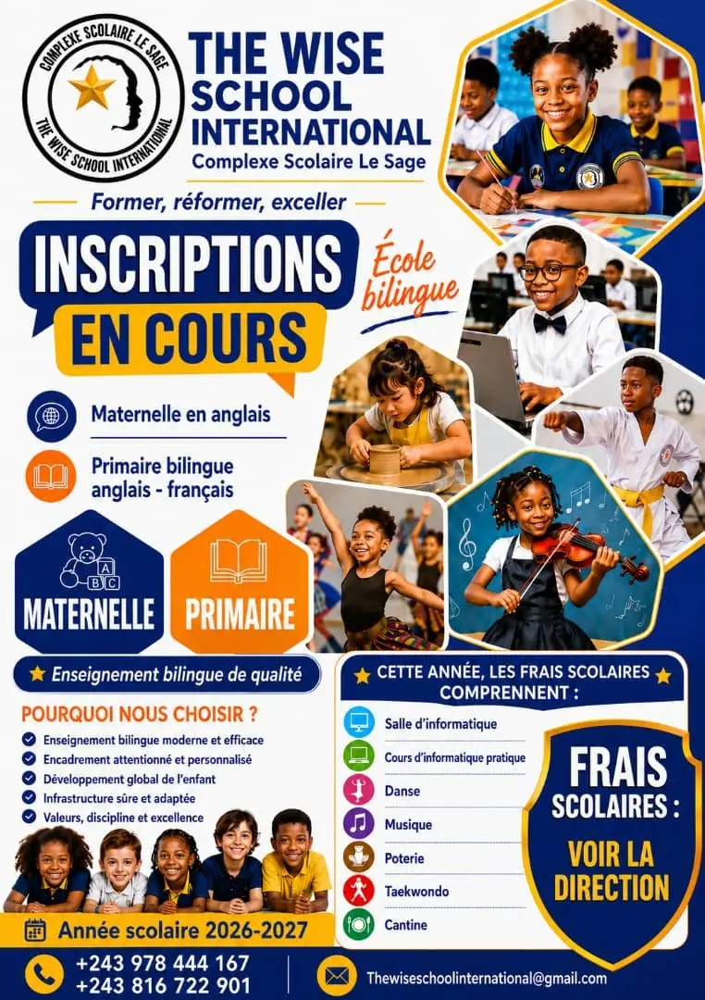

Maternelle
Éveil, langage, motricité, premières notions et apprentissage de la vie en groupe, avec une forte présence de l'anglais.
- 1re, 2e et 3e maternelle
- Activités manuelles et expression
- Horaires : 8 h à 14 h

Inscriptions 2026-2027 ouvertes
Kinshasa · Barumbu · Quartier Bon Marché
Une école bilingue français–anglais, de la maternelle à la 6e primaire, où l'enfant apprend, s'exprime, grandit et évolue dans un cadre suivi.
Bienvenue chez nous
Le Complexe Scolaire Le Sage — The Wise School International — accueille les enfants de la maternelle et du primaire. Le programme national congolais est conduit en français et en anglais, avec un encadrement adapté à l'âge et au niveau de chaque élève.
Les cours sont complétés par l'informatique, la danse, la musique, la poterie, le taekwondo, les ateliers créatifs et la cantine scolaire.



Admissions 2026-2027
La préinscription se fait en quelques minutes. La famille vient ensuite à l'école avec les pièces demandées pour la validation du dossier.
Préinscription
Remplissez la fiche en ligne ou contactez la Direction.
Dossier à l'école
Apportez les documents de l'enfant et du tuteur.
Validation
La Direction confirme la classe et finalise l'inscription.
Nos cycles
Deux cycles, une même ambition : donner à chaque enfant des fondations solides.
Éveil, langage, motricité, premières notions et apprentissage de la vie en groupe, avec une forte présence de l'anglais.
Six années d'apprentissage en français et en anglais, avec préparation progressive à l'ENAFEP.
La vie à l'école
Les photos sont affichées dans leur version la plus nette disponible et mises en valeur sans modifier les visages.


Pourquoi choisir Le Sage ?
Notre projet éducatif associe enseignement, activités pratiques, discipline, suivi des résultats et sécurité des entrées et sorties.
Connaître notre écoleEnseignement bilingue
Français et anglais dès la maternelle.
Encadrement attentif
Un suivi adapté au niveau de l'enfant.
Activités variées
Informatique, arts, musique et sport.
Sorties contrôlées
L'enfant repart avec une personne autorisée.
Une place pour votre enfant
Contactez la Direction ou envoyez la fiche de préinscription en ligne.